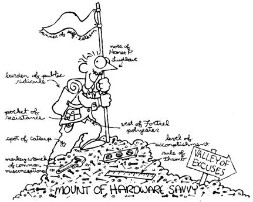

"I'd like some of those black, shiny nails with circles going around them," I said brightly.
Bob looked at me. I knew his name was Bob from the label on his green work shirt. His eyes glittered like those of a starving wolf ready to devour its kill; then he looked back down at the paper in front of him, pulled a pencil from behind his ear, and began to write.
I waited a moment, unsure of his gesture, then asked again in a smaller voice. Bob never looked up but spoke in a slow, evil tone, "Buddy, find out what it is you want, and then come back here."
Chagrined, I turned and walked out of the store past three smirking men in work clothes. I felt their eyes burn my neck and heard peals of laughter erupt when I left the store.I cursed the lumberyard quietly and furtively. Then, with the undying optimism of a man with a cause, I headed for the hardware store.
The hardware store man was with a fellow who had a tape measure gadget on his belt. They were deep in conversation-something about 12-2 Romex-and made frequent, reverent references to "The Code." I lined up behind the workman and waited my turn. Two other workmen came in wearing huge grins, greeting each other and the hardware man like bosom buddies and getting what they needed.
After about 20 minutes and much coughing and shuffling of my feet, I finally got the courage to speak. Just as I began, the workman looked at his watch and said in a voice louder than mine, "Well, John, I gotta be heading back-I was supposed to be back 20 minutes ago." They both laughed, and he turned and brushed by me. His tape measure jabbed me, then fell to the floor. As he stooped to get it, his eyes narrowed.
"Watch it, bud,"
he snarled. Shaken, I waited for him to leave before stepping to the counter. "Do you have any of those black, shiny nails with the little circles going around them? To help them stick, I think," I stammered.
He looked at me for a moment as if in deep concentration, then said in a loud voice, "Those are in the left aisle." Gratefully, I headed for what I presumed to be the left aisle.
Suddenly I realized he had been talking to a clerk in the front of the store. With one last effort I returned to the counter. He watched me, then reached for a phone. The next thing I knew, he was talking to Black & Decker about the jigsaws that were supposed to be in last Tuesday.
I walked out of the store depressed and ended up in a grocery store where I found some nails in a plastic bag that were smooth and big but nevertheless would have to do.
Those were my early days as a do-it-yourselfer. They were dark days indeed. Drugstores and grocery stores were very limited in their choice of hardware. The remodeling project I had started came to a plaster-falling halt. Despite the chaos, I rebelled against the construction industry-never would I return to those malevolent retailers.
My holdout ended when a raccoon made its home in our attic. Nocturnal noises overhead had warned us of our unwanted tenant, but it wasn't until the masked intruder fell through the ceiling into a pot of steaming borscht that its identity was ascertained. My wife screamed, the raccoon escaped, and I, after masking the hole with a piece of cardboard, drove straight to the public library. I returned two hours later with the construction shelf's entire collection.
I read. I memorized. My wife gave me quizzes. I even outlined chapters. Finally, I was ready. Armed with typed note cards in my shirt pocket and tiny reminders on my cuff, I headed back to Bob's lumberyard. Inside, I immediately spotted Bob. He was leaning over the counter, the pencil in his ear pointed right at my heart. I turned and almost walked out, but all that study and the taste of plaster dust turned me back. With a determined step I approached the counter. "Yes," said Bob menacingly, but never looking up.
"I'd like some 3/4-inch A/C, exterior grade fir plywood." I said it fast, like a child in a Christmas program, remotely and without comprehension. Bob looked up.
"Yeah? Well, is that it?"
"No, I'd also like some . . ." I panicked. My mind raced furiously, grasping at every building term I had learned. In that same instant, my dilating eyes happened to catch the words on my sleeve, which was rising to cover my panic-stricken face. Rapidly I read, " . . . quartersawed oak, surfaced on four sides, 3/4-inch, 16 board feet."
Bob broke into a broad smile. He yanked the pencil from behind his ear and wrote down my order. He called to the yard and had them check to see how soon they could get it. I tried to hide my surprise, but when he added, "If you're going to be buying in quantity, we can get you a discount," my mouth dropped wide open.
As I was leaving, I almost bumped into a workman who'd just entered. Before I could utter a word of apology, he exclaimed, "Oh, excuse me, sir. Clumsy of me not to see you." As I turned to close the door behind me, both he and Bob were beaming and waving goodbye.
That day revived my remodeling career. No longer did I fear the Workmen of the World. I had discovered the key, the passport without which no one may enter this group or any other: words. Just words. Know their terms, and you'll make the team. Protected by the time-honored jargon, I snuggled into that green-work-shirt society. And it got very cozy.
One day Jerry, my neighbor, asked me if I had any small, black nails with little circles going around them. For a moment, a scowl jerked between my eyebrows. A thousand Bobs in a thousand cliques from time immemorial scowled delightedly with me.
But then I remembered.
I smiled and said, "Sure." I got him the nails, and as he was leaving I told him, "By the way, if you ever try to pick these up at the lumberyard, ask for drywall nails."
Jerry smiled and said, "Hey, thanks a lot. I'll do that. You know, you ought to go into the business, selling hardware and stuff: You'd do real good."
I've thought a lot about that, while pounding nails.
|
 |
|
|